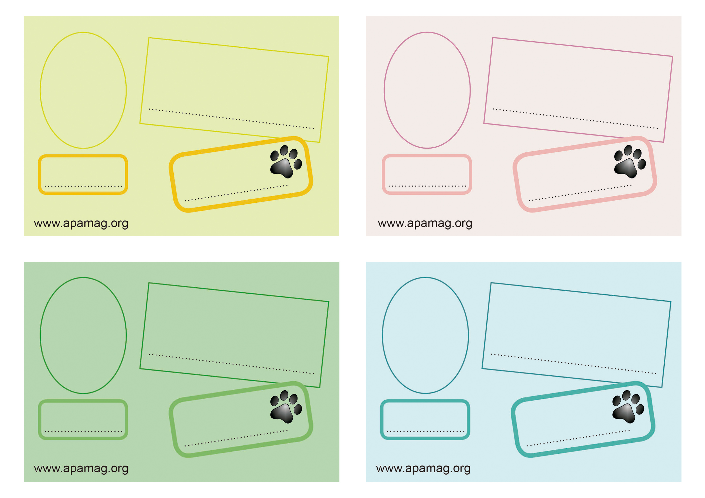
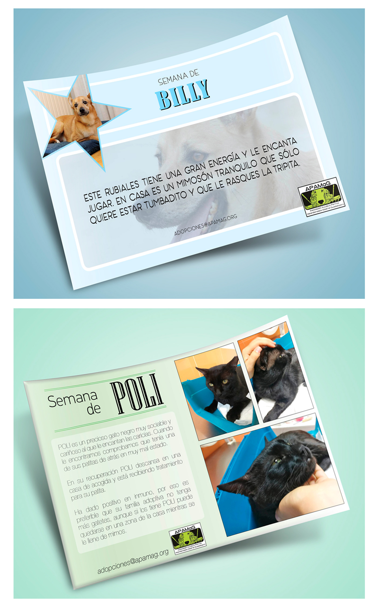
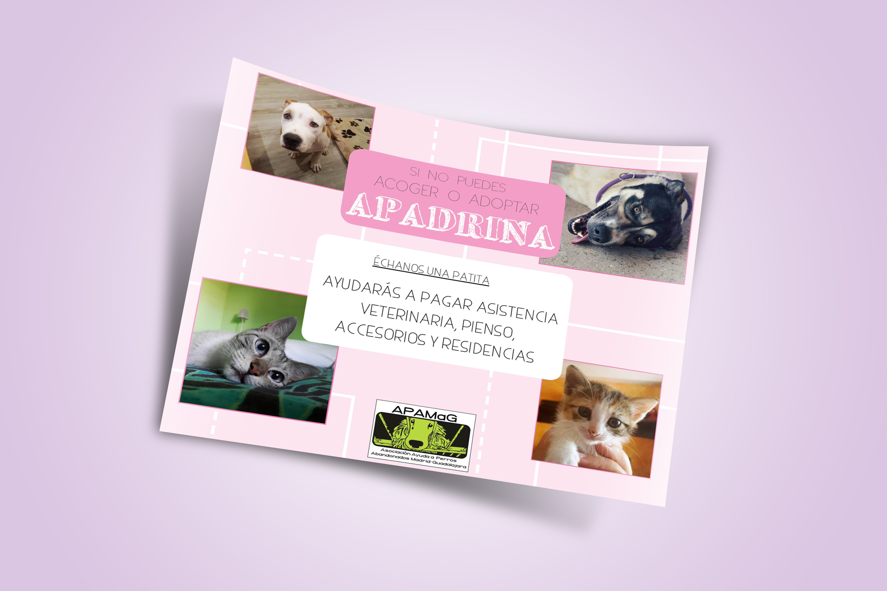

APAMaG - PROTECTORA DE ANIMALES
Creo que a todos se nos parte el alma cuando recibimos una noticia sobre el abandono de mascotas, en algunos casos un abandono brutalemente cruel de animales que solamente pueden tener la culpa de haber crecido y nacido en un entorno complicado y nada seguro ni feliz para ellos. A pesar de ello hay personas que velan por conseguir entornos estables para todos ellos, personas voluntarias que no buscan obtener un valor monetario, sino un valor sentimental, y esto es precisamente lo que buscan y buscamos los voluntarios que colaboramos en protectoras de animales.
PRESENTACIÓN DE LA PROTECTORA
APAMaG es una asociación de ayuda a animales abandonados que opera principalmente entre la zona de Madrid y Guadalajara (APAMaG) es una entidad sin ánimo de lucro cuyo objetivo final y principal es la protección animal y el respeto hacia la vida animal . Desde la constitución de la protectora en enero del año 2012 APAMaG:
- Lucha contra el abandono y el maltrato de los animales y vela por sus Derechos
- Gestiona adopciones y acogidas tanto de animales procedentes de perreras como de la calle
- Fomenta la buena tenencia de animales de compañía a través de campañas informativas
- Lucha por el sacrificio cero
NUESTRAS FORMAS DE HACERNOS OIR
-Página web: en APAMaG encontrarás toda la información relativa a la actividad de la protectora, puedes echar un vistazo a los apamagueros (así les llamamos) que tenemos en adopción, nuestros contactos y conocer las maneras de aportar tu granito de arena, ya que puedes colaborar siendo casa de acogida, adoptante, socio, voluntario, padrino o madrina, donar o ncluso ser uno de nuestros patrocinadores.
-Redes Sociales: a través de Twitter, Instagram ó Facebook podrás estar al tanto de las novedades de la protectora. Cada día actualizamos nuestras redes para difundir a nuestros apamagueros, los eventos proximos o noticias sobre acogidas ya confirmadas.
-Voluntarios: los voluntarios somos el motor de la protectora, un pilar muy importante, y además, el mejor medio para dar a conocer APAMaG y sus actividades.
-Eventos: cada fin de semana tienen lugar varios eventos muy interesantes donde acudimos los voluntarios. Todos los eventos son igual de importantes, pues en cualquiera puedes encontrarte con posibles interesados en acoger, adoptar, hacerse voluntarios o pedir información. Se organizan eventos de índole variada: algunos más pequeños las mesas informativas o los mercadillos solidarios, pero otros más multitudinarios como desfiles, manifestaciones o canicross.
-Canal de Youtube: a través de canal de youtube de APAMaG puedes entretenerte viendo las historias de nuestros apamagueros.
-Elementos gráficos: la imagen que damos de la protectora es muy importante. Ha de ser transparente, humilde y, sobre todo, que sirve para informar y difundir. Contamos con fichas de presentación de nuestros apamagueros, tarjetitas de precios para las mesas informativas y mercadillos, vídeos de presentación, carteles informativos de los eventos o calendarios anuales solidarios, muchos de estos elementos han sido realizados los voluntarios, y algunos realizados por mí personalmente.
Plantillas de tarjetas de precios
Estas plantillas cuentan con un marco para la foto en forma de óvalo y tres contenedores en los que se escribirá el nombre del apamaguero, la pieza que está en venta y su precio. Cada animal cuenta con una tarjeta y en todas apacerece la página web de la protectora. Estas tarjetas se realizaron con el fin de exponerlas en las mesas informativas y mercadillos solidarios dónde se ponen a la venta diferentes objetos y accesorios para ellos, muchos hechos a mano. Lo recaudado, por supuesto, está dedicado íntegramente a la ayuda de los animales de la protectora.
Muestra de algunas tarjetas.
Carteles "Semana de"
Cada semana tratamos de dar protagonismo a un apamaguero, y lo hacemos creando carteles a los que llamamos "La Semana de...". Cada uno de ellos está personalizado en función del apamaguero protagonista.
Carteles en general
En APAMaG se puede ayudar de diferentes formas: acogiendo, adoptando, haciéndote socio, apadrinando, donando...Para cualquiera de esas acciones nos encargamos de hacer carteles informativos que después difundimos en nuestras redes sociales.
< Volver arriba >